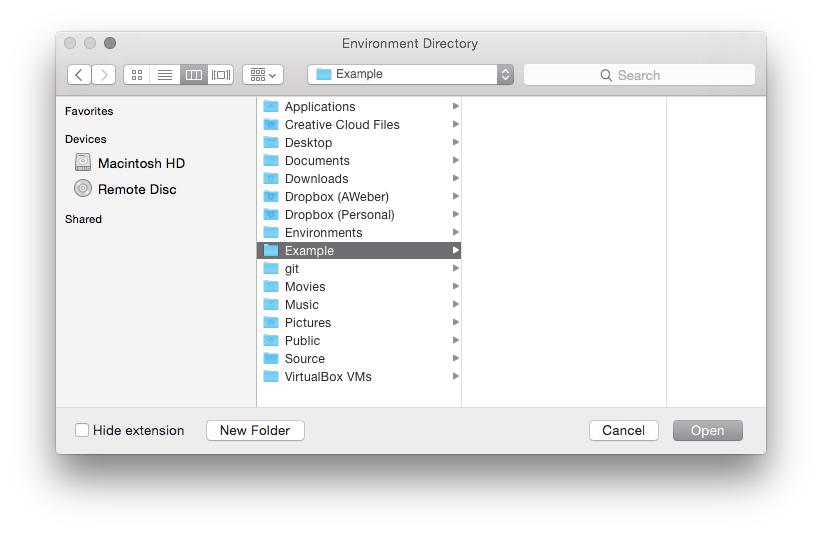
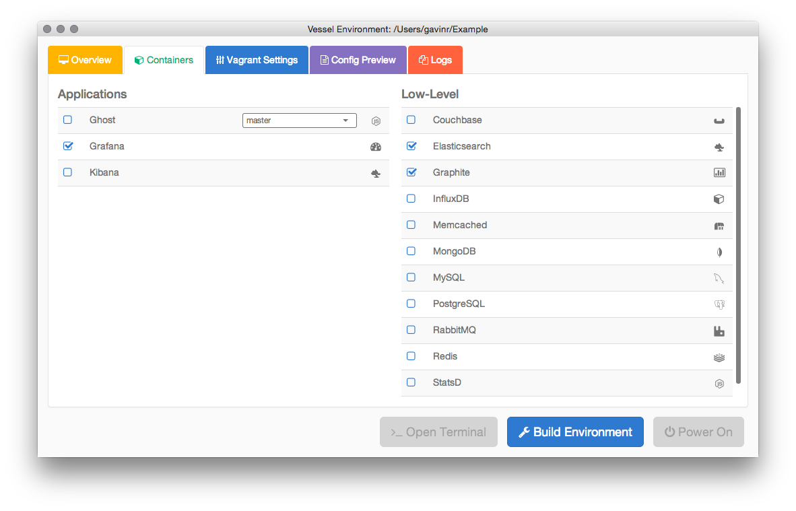
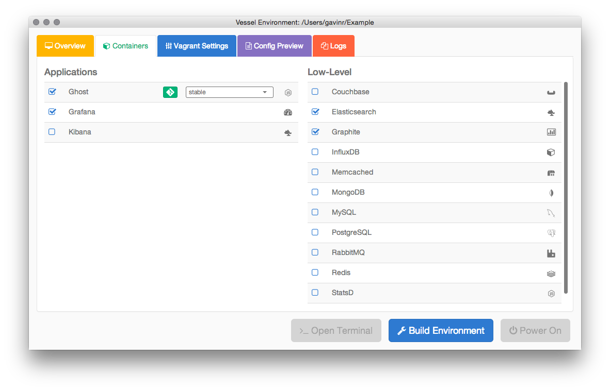
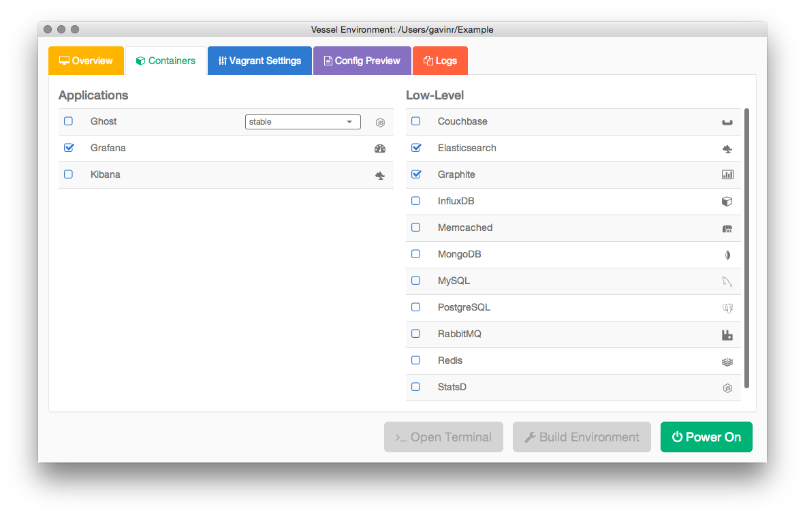
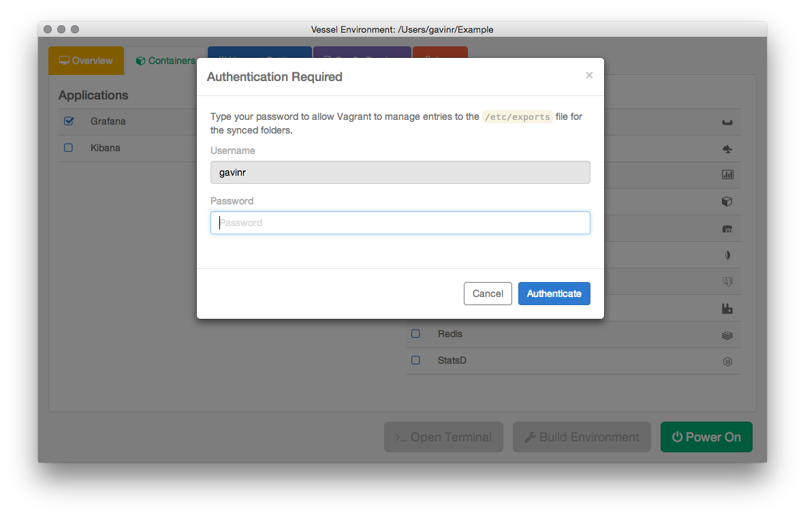
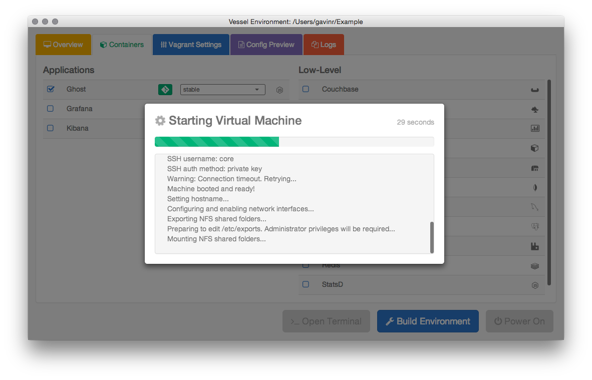
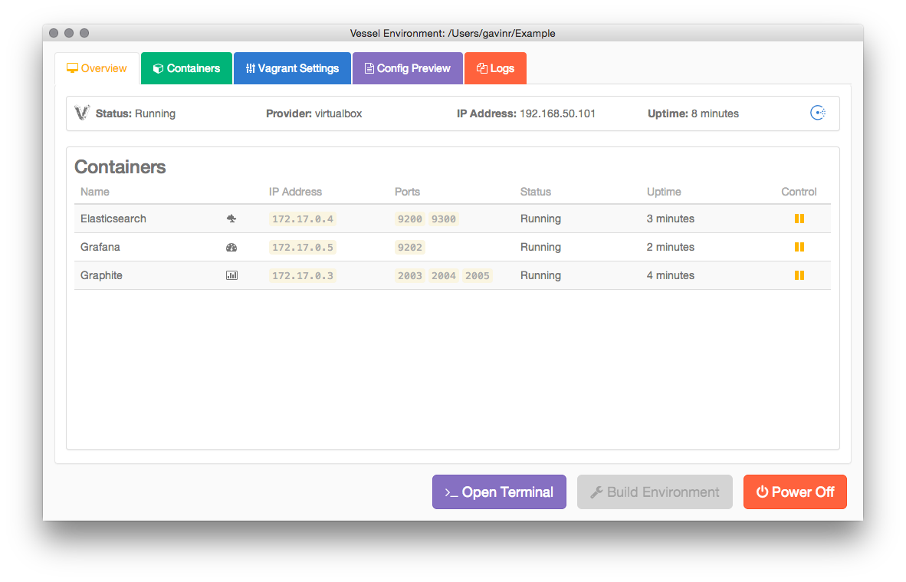
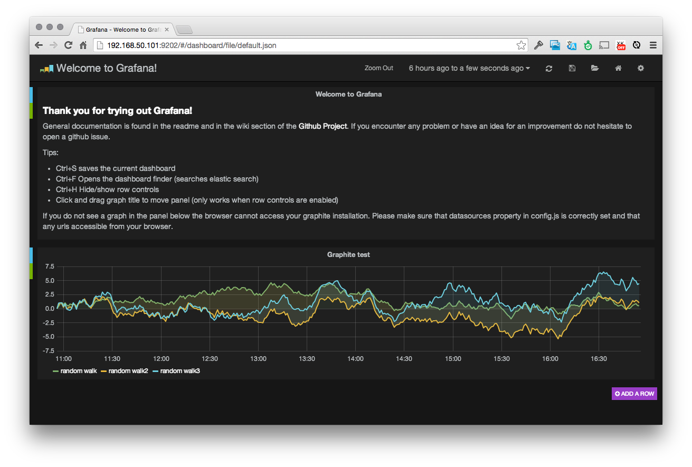

When you run Vessel for the first time, you will be prompted to enter a git URL for the manifest repository:
The manifest repository defines the settings for Vagrant and all of the Docker containers available to your development environment.
The repository URL for the public AWeber Vessel manifest repository is:
https://github.com/awvessel/manifest.git
Enter the URL into the box and click Save URL.
When you save the URL, the repository will be cloned to a newly created /Users/[USERNAME]/.vessel/ directory. Each subsequent time you start Vessel, the repository will be updated to reflect the current state of the master branch for the manifest.
One key Vessel concept is the environment directory. This is a directory that will contain not only the Vagrant and CoreOS configuration to start your virtual environment, but it will also contain sub-directories with source-code and scripts available to the virtual environment.
When you are first starting a new environment, you should create an empty directory and let Vessel setup and manage the contents of the directory. Don't worry about cloning the git repositories you intend to work on, Vessel will do this for you.
Once you have created and selected a directory/folder for the development environment, press Open to load the environment.
When a new environment directory is loaded for the first time, Vessel will start on the Containers tab. This is the tab where you will select the applications and low-level services you need in your development environment.
When you select an application on the left side of the Containers tab, such as the Grafana application, you should see other low-level dependency services selected as well.
In addition to selecting the dependency services, the blue Build Environment button will be enabled at the bottom of the window.
If you intend to work on the source code for a particular application, once the container has been enabled, the git button will become available. When gray or disabled, the source code for the project will not be cloned. However, once you click the button, it should turn green, indicating that the source for that project will be made available in the environment's source directory and inside the container.
If an environment has multiple branches in its git repository, a drop-down box will be presented to the right of the application/service name that allows you to select which branch you would like to work out of. By default, the master branch will be selected when cloning repositories.
In most circumstances, once you have selected the desired services and branches, you can build the environment. Doing so will create the required configuration and clone the git repositories for the environment. Vessel will attempt to clone any enabled git repositories in parallel to reduce the time required to get started:
When the environment is built, a local copy of the manifest file will be stored in the environment directory. This file will save the state of your configuration and all of the available options at the time when the environment was first created. If new containers become available in the global manifest repository after you create your environment, you can reset the configuration by removing the .vessel.yaml file in the environment directory.
Once the environment has been built, the green Power On button in the bottom right corner will be enabled.
As Vagrant uses sudo to edit the /etc/exports file in order to provide shared folders between your operating system and the Virtual Machine, you will need to enter your password. While your password is cached internally in the Vessel application, it is never written to disk, nor is it logged when any commands are issued. Vessel will directly interact with the sudo command to validate your password prior to starting any Vagrant process. Enter your password and then press the Authenticate button. If you have recently used sudo to gain root access in your operating system, the Authentication Required dialog will not be presented.
Once authenticated, the process of starting the Virtual Machine and starting the Docker containers will begin. The duration of the startup is impacted by a few factors: the speed of your connectivity to the docker server and the number of services selected. You will be presented with the status dialog so you can track the progress:
Once the process has completed, the status dialog will go away and the green Power On button will be replaced with an orange Power Off button. If you'd like to see the output from Vagrant or the various things the application has done, you can navigate to the Logs tab.
The behavior of each application or service in the virtual environment will differ based upon how the docker container is structured. By default, the goal is to have the selected services up and running in the environment. If you navigate to the Overview tab you can see the containers that are running and the ports they are exposing to your local operating system.
For example, if you wanted to test the Grafana service running in the Virtual Environment, we could point our web browser to http://192.168.50.101:9202.
Each container that a service is running in has its IP address listed in the over tab so that you can SSH directly into the container if required. To do so, you must first SSH into the Virtual Machine using the vagrant ssh command in the environment directory:
s826:Grafana gavinr$ vagrant ssh
CoreOS (beta)
core@awdev ~ $
From there, if you wanted to log into the Grafana container, you would SSH to the 172.17.0.5 IP address:
core@awdev ~ $ ssh 172.17.0.5
Welcome to Ubuntu 12.04.4 LTS (GNU/Linux 3.8.0-35-generic x86_64)
* Documentation: https://help.ubuntu.com/
root@32f815fea551:~#
The environment created by Vessel is fairly opinionated about how things are created and includes service discovery provided by Consul. This is not a Vessel specific implementation, but rather a result of the manifest file that is used.
Should you want to use Vessel for your own projects or for projects that are not in the Manifest, you can create your own global or local Manifest file that has the containers and repositories that are appropriate for your project. For more information on the base environment and service discovery aspects of the AWeber development environment, check out the Development Environment documentation.
If you’ve made it this far without any issues, you’ve successfully created a virtual environment using Vessel. You should have services running and should be able to interact with them. For your own use, you’ll probably want to create your own manifest repository and docker images, but you’re welcome to continue to use the public ones as well.